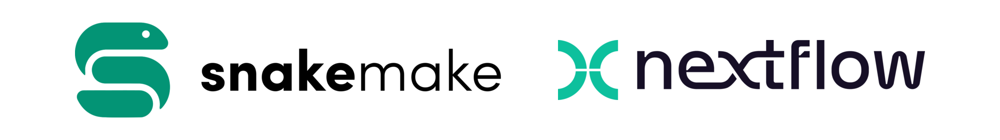
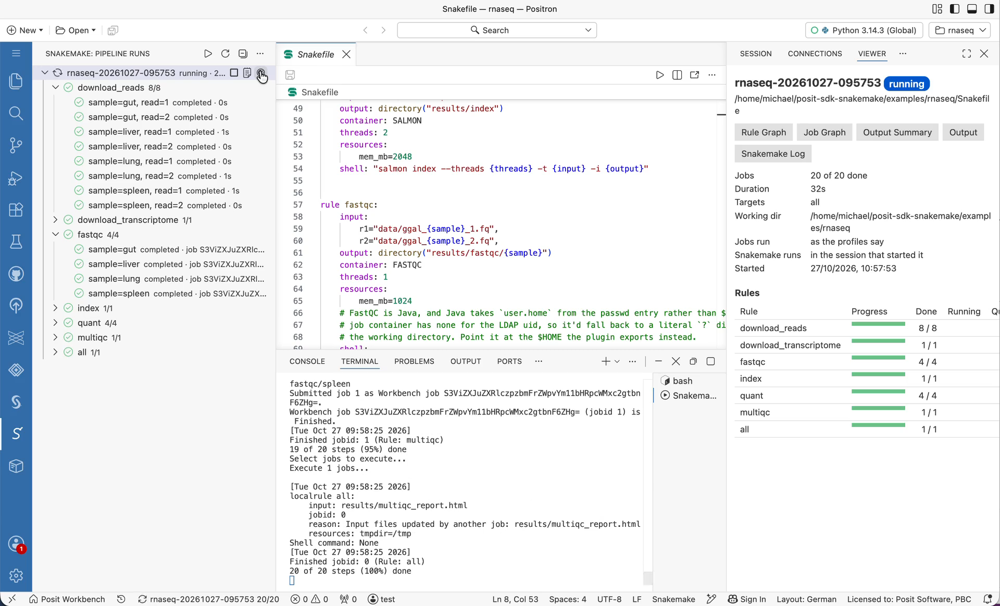
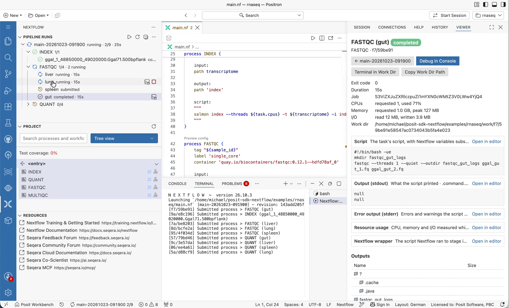

Snakemake and Nextflow on Posit Workbench and in Positron
Two new experimental executors let Snakemake and Nextflow run every pipeline step as a Posit Workbench Job. Two Positron extensions let you start those pipelines and follow them from your IDE.

Pipeline managers like Snakemake and Nextflow are standard tools in bioinformatics and in many other data-heavy fields. They split a workflow into steps, work out which steps can run at the same time, and send each step to a compute backend: your laptop, an HPC scheduler, a cloud batch service, or Kubernetes.
This post introduces two new pieces for running these pipelines on Posit Workbench:
- Workbench executors for Snakemake and Nextflow, which run every step of a pipeline as a Workbench Job. They work from any terminal, with or without Positron.
- Positron extensions for Snakemake and Nextflow, which start those pipelines from your editor and follow each step live.
Status: experimental. Everything in this post works end to end. We’ve run real pipelines with it, including the RNA-seq example below. It is still experimental, though: configuration options may change, and some features (listed at the end) aren’t there yet. We’d love your feedback, bug reports, and feature requests. Please open an issue on any of the repositories.
Part 1: Run every step as a Workbench Job
If you use Workbench, there’s already a compute backend next to your IDE: the Workbench Job Launcher. It knows your cluster, your resource profiles, your container images, and who you are. Two new executors let your pipelines use it:
posit-sdk-snakemake, a Snakemake executor plugin (--executor workbench).posit-sdk-nextflow, a Nextflow executor plugin (executor = 'workbench').
With either one, every rule or process in your pipeline runs as its own Workbench Job. Jobs appear in the Workbench Jobs UI, run under your identity, and follow the limits your administrator has set. This works on every Workbench cluster type: Kubernetes, Slurm, and the Local launcher.
Why route pipeline jobs through Workbench?
This idea isn’t new. The mirai 2.6.0 release added a Workbench launcher: one call to http_config() and mirai’s daemons start as Workbench Jobs. The new executors do the same thing for pipeline managers. The pipeline engine decides what to run and when, and Workbench decides where and how.
This matters most when Workbench runs on Kubernetes. Running pipeline steps on Kubernetes yourself usually means one of two things:
- Talking to the Kubernetes API directly. Snakemake’s and Nextflow’s own Kubernetes executors need a service account, RBAC permissions to create pods, and access to a namespace. In many organizations data scientists don’t get that, for good reason.
- Running containers inside your session. Per-step containers usually mean Docker, Podman, or Apptainer/Singularity. Inside a Kubernetes pod those typically need elevated privileges, which locked-down clusters don’t grant.
The Workbench executors avoid both. Workbench already has the permissions it needs to start containerized jobs on the cluster. The executors only call the Workbench API, and they do it from user space. A step’s container image (container: in Snakemake, container in Nextflow) becomes the image of that step’s Workbench Job, and the step runs natively inside it. You don’t need a container runtime in your session, Kubernetes credentials, or any special privileges.
Kubernetes isn’t the only option. The executors work with any Workbench cluster type: Kubernetes, Slurm, and the Local launcher. You choose the target with a single setting (workbench-cluster in Snakemake, workbench.cluster in Nextflow), so the same pipeline can move from a Local cluster to Slurm or Kubernetes without other changes. Per-step container images apply on clusters that support containers. On other clusters, steps run in the job’s default environment, so the tools each step needs must be installed there.
Authentication follows the same two paths in both projects:
- Inside a Workbench session or job (for example, a terminal in Positron or RStudio Pro): there’s nothing to configure. The executors use the session’s or job’s own credentials automatically.
- Anywhere else (a laptop or CI): set
WORKBENCH_SERVERandWORKBENCH_API_KEY.
How it works
Both executors talk to the Workbench API themselves, with a small client built into each one. Neither needs any other Workbench library, but each one fits into its pipeline engine in its own way.
Snakemake has an official executor plugin interface. snakemake-executor-plugin-workbench is a Python package that implements it, and its Workbench client uses only Python’s standard library. Snakemake finds it automatically once it’s installed, and each rule instance becomes a Workbench Job. Rule threads map to the job’s CPU count, and resources.mem_mb maps to its memory. To use one of the cluster’s resource profiles, set --workbench-resource-profile, or override it for a single rule with resources: workbench_resource_profile="large".
The same package includes a logger plugin (--logger workbench) that writes a run’s progress to a file as it happens, and a posit-workbench-smk-launcher command-line tool for listing clusters and finding, stopping, or submitting Workbench Jobs. Every job is tagged with its run, rule, and job number, so you can find all the jobs of one run later.
Nextflow plugins run on the JVM. nf-workbench is a Nextflow plugin that extends Nextflow’s grid-executor base class, the one behind the built-in Slurm, LSF, and SGE executors. Where those call their scheduler’s tools (sbatch, squeue, and scancel for Slurm), nf-workbench calls the Workbench API directly, with the JDK’s HTTP client. It needs nothing else: no Python and no command-line tool.
Because nf-workbench behaves like a grid executor, the usual Nextflow executor settings (queueSize, submitRateLimit, pollInterval, and so on) work as you’d expect. The cpus and memory directives map to Workbench resource limits, and you can select a Workbench resource profile for the whole pipeline or for individual processes:
plugins {
id 'nf-workbench@0.4.0'
}
process {
executor = 'workbench'
withLabel: 'big_mem' {
ext.resourceProfile = 'large'
}
}
workbench {
cluster = 'Kubernetes'
resourceProfile = 'small'
}The repository also has posit-workbench-nf-launcher, an optional Python tool for submitting, listing, and stopping Workbench Jobs from a terminal or a script.
Both executors expect a shared filesystem between the place you run snakemake or nextflow and the place Workbench runs jobs. In practice that’s your home directory or a project share. Snakemake’s remote executors and Nextflow’s grid executors make the same assumption.
Example: an RNA-seq pipeline
Each repository includes the same small RNA-seq quantification pipeline, adapted from the nextflow-io/rnaseq-nf tutorial. Both versions use the same tools, container images, and test data (a slice of a chicken transcriptome and four paired-end samples, about 6 MB), and they produce the same results:
+--> FastQC (x N samples) --+
reads (N samples) -+ +--> MultiQC
+--> quant (x N samples) --+
^
transcriptome --> index ---+ (one Salmon index, reused by every quant job)| Step | Tool | Runs | Parallelism |
|---|---|---|---|
| index | Salmon | once | Starts immediately, alongside FastQC |
| fastqc | FastQC | per sample | One job per sample, all at once |
| quant | Salmon | per sample | All start as soon as the index is ready |
| multiqc | MultiQC | once | Waits for all per-sample results |
Every step uses its own BioContainers image from quay.io. With four samples, the pipeline submits ten Workbench Jobs, and up to eight run at the same time.
The commands below target a cluster named Kubernetes. To run on a Slurm or Local cluster instead, change the cluster name. If that cluster doesn’t run containers, make sure Salmon, FastQC, and MultiQC are available in the job environment.
Snakemake
Each rule declares its own container and resources:
rule quant:
input:
index="results/index",
r1="data/ggal_{sample}_1.fq",
r2="data/ggal_{sample}_2.fq",
output: directory("results/quant/{sample}")
container: "docker://quay.io/biocontainers/salmon:1.10.3--h6dccd9a_2"
threads: 2
resources:
mem_mb=2048
shell:
"salmon quant --threads {threads} --libType A -i {input.index} "
"-1 {input.r1} -2 {input.r2} -o {output}"The docker:// prefix is Snakemake’s usual way to write an image URI. The plugin removes it and hands the image straight to Workbench, so you don’t need --software-deployment-method apptainer.
A workflow profile picks the executor and the target cluster:
# profiles/default/config.yaml
executor: workbench
workbench-cluster: Kubernetes
jobs: 10
latency-wait: 60Install the plugin and run the pipeline:
git clone --branch v0.3.0 https://github.com/sol-eng/posit-sdk-snakemake
cd posit-sdk-snakemake
uv venv
uv pip install ".[snakemake]" # note: not an editable install
cd examples/rnaseq
snakemake # settings come from profiles/default/config.yaml
snakemake -j 2 # or: at most 2 Workbench Jobs at a timeTo add the plugin to an existing Snakemake environment instead, run pip install "git+https://github.com/sol-eng/posit-sdk-snakemake@v0.3.0" in it.
Nextflow
The Nextflow version looks like any other Nextflow pipeline. Each process has its own container, and labels set its resources:
process QUANT {
tag "${sample_id}"
label 'multi_core'
container 'quay.io/biocontainers/salmon:1.10.3--h6dccd9a_2'
publishDir "${params.outdir}/quant", mode: 'copy'
input:
path index
tuple val(sample_id), path(reads)
output:
path "${sample_id}"
script:
"""
salmon quant --threads ${task.cpus} --libType A -i ${index} \\
-1 ${reads[0]} -2 ${reads[1]} -o ${sample_id}
"""
}Install the plugin from its release, then run the pipeline. You need Nextflow 25.10 or later and Java 17 or later:
mkdir -p ~/.nextflow/plugins/nf-workbench-0.4.0
unzip nf-workbench-0.4.0.zip -d ~/.nextflow/plugins/nf-workbench-0.4.0
git clone https://github.com/sol-eng/posit-sdk-nextflow
cd posit-sdk-nextflow/examples/rnaseq
nextflow run main.nf --workbenchCluster KubernetesThe example turns on Nextflow’s execution reports. results/pipeline_info/timeline.html shows the overlapping tasks, and the native_id column in trace.txt holds each task’s Workbench Job ID, so you can find any task in the Workbench Jobs UI.
Parallelism in practice
On a Kubernetes-backed Workbench cluster, with images already pulled, the pipeline finishes in under a minute with the default settings in both engines. If you cap concurrency at two jobs (snakemake -j 2 or --workbenchQueueSize 2), it takes noticeably longer, because the independent steps now queue up instead of running side by side. Workbench just sees a stream of jobs, and the pipeline engine decides how many to keep in flight.
Headless runs
The pipeline engine itself, snakemake or nextflow run, can run as a Workbench Job too. That “driver” job then submits each step as a Workbench Job of its own, and the pipeline keeps going when your session is suspended or stopped.
A driver job started from a Positron or RStudio Pro session needs no credentials passed in: Workbench gives every job credentials of its own, and they keep working after the session has stopped. From a laptop or CI, submit the driver with the launcher tool (posit-workbench-smk-launcher submit or posit-workbench-nf-launcher submit), and pass it WORKBENCH_SERVER and WORKBENCH_API_KEY. Each repository’s documentation has the details. The Positron extensions in Part 2 start such a driver job for you.
Part 2: Start and follow pipelines in Positron
The executors work from any terminal. If you use Positron, two extensions put the whole run in your IDE: Snakemake and Nextflow. Each adds a Pipeline Runs view to the engine’s sidebar, and keeps the language support of the upstream VS Code extension it’s forked from. Watch the Snakemake and Nextflow demos to see them in action.
Start a run
Run Pipeline asks for the targets or parameters and a profile. With the executor from Part 1 installed, it also asks where the steps should run: in the session, or as Workbench Jobs, and on which cluster and resource profile. To keep the pipeline going while your session is suspended, choose to run the pipeline itself as a Workbench Job (a headless run). On Workbench, the extensions use your session’s credentials, so there’s nothing to set up.
Follow it
The view follows the run live, per rule or process and per job. Runs keep going when the window is reloaded or closed, and the next window picks them up again.

Click a step to open its dashboard in the Viewer: its status, resources, logs, and outputs. HTML outputs such as FastQC reports open in the Viewer too. A run’s dashboard shows progress per rule or process. Stop a run, which cancels its Workbench Jobs, or Cancel a single job.

When a step fails
The run’s dashboard lists the failed steps with their errors. Debug in Console sets up the R or Python console the way the step would run, and opens the step’s script so you can step through it. Once it’s fixed, run the pipeline again (Snakemake) or Resume it from Nextflow’s cache.
You can also ask Posit Assistant. It can list your runs, explain why one failed from the failed steps’ logs, and start or stop a run after you approve it.
Install
Each extension is a VSIX file on its repository’s releases page. Install it with Extensions: Install from VSIX… in Positron.
Current limitations
These are the things we know about. Some of them are why this is still labeled experimental.
The executors:
- A shared filesystem is required. Inputs, outputs, and logs are exchanged through the working directory. On network filesystems you may need to increase Snakemake’s
latency-waitor Nextflow’sexitReadTimeout. - Only CPU and memory are mapped. Wall time, disk, and GPU/accelerator requests aren’t passed to Workbench yet.
- Your Python must be visible to the jobs. For Snakemake on Kubernetes, the virtual environment’s Python has to live on the shared filesystem (for example, a
uv-managed Python under your home directory), not on the session image’s system path. - Headless runs submitted with an API key are the least tested path. Headless runs started from a Positron session have been tested on a real Workbench cluster. Runs submitted from outside Workbench with
WORKBENCH_API_KEYhave only run against a stand-in for the Workbench API so far. - Packaging is manual for now. The Snakemake plugin installs from GitHub, not PyPI. The Nextflow plugin is a zip file on GitHub releases, not in the Nextflow plugin registry.
The Positron extensions:
- They aren’t on Open VSX yet. Install them from their VSIX files.
Try it and tell us what you think
Everything here works, and we want it to work well for your pipelines. If you run Snakemake or Nextflow on Posit Workbench, especially on Kubernetes or Slurm, please try it and let us know how it goes:
- Snakemake executor: sol-eng/posit-sdk-snakemake
- Nextflow executor: sol-eng/posit-sdk-nextflow
- Snakemake for Positron: sol-eng/positron-snakemake-extension
- Nextflow for Positron: sol-eng/positron-nextflow-extension
Constructive feedback and feature requests are very welcome: things that broke, settings you missed, resources you need mapped, or pipelines (nf-core, anyone?) you’d like to see working.